С Чердаков
«С Чердаков» принимает вещи, которые больше не нужны людям, и помогает им найти новых хозяев. Медведи с разными характерами, силуэты предметов и цветные полосы рассказывают, как вещи переходят от дома к дому.
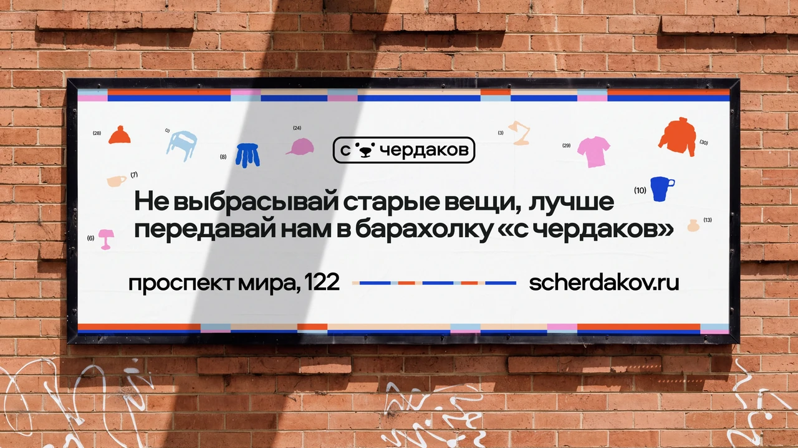
Задача
Барахолка задумывалась как открытое пространство с атмосферой праздника, встреч и ярких находок. При этом разнообразие товаров предполагало продуманную сортировку.
Айдентика должна была передать характер места и рассказать о двух сторонах проекта. Сюда можно принести ненужные вещи и найти что-то для себя.
Почему медведь
Медвежонок отсылает к старой игрушке, которую хранят из-за связанных с ней воспоминаний. Разноцветные «заплатки» напоминают о прошлом вещи и её новой жизни.
Разные формы, цвета и выражения лиц передают разнообразие барахолки. Большинство персонажей смотрит вверх, в сторону чердака.
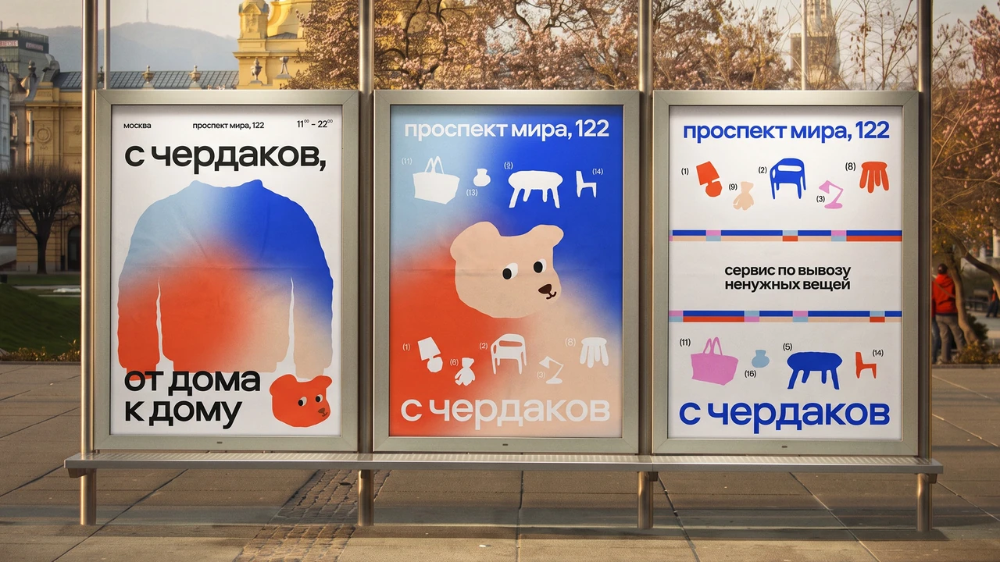
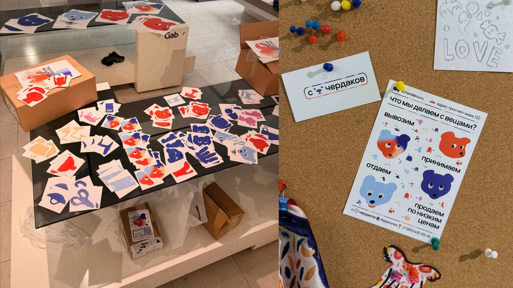
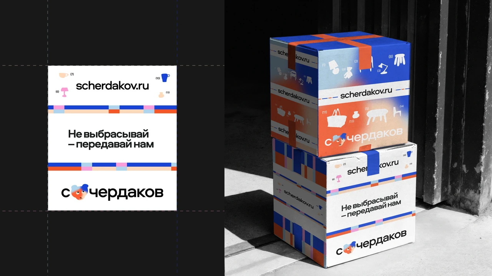
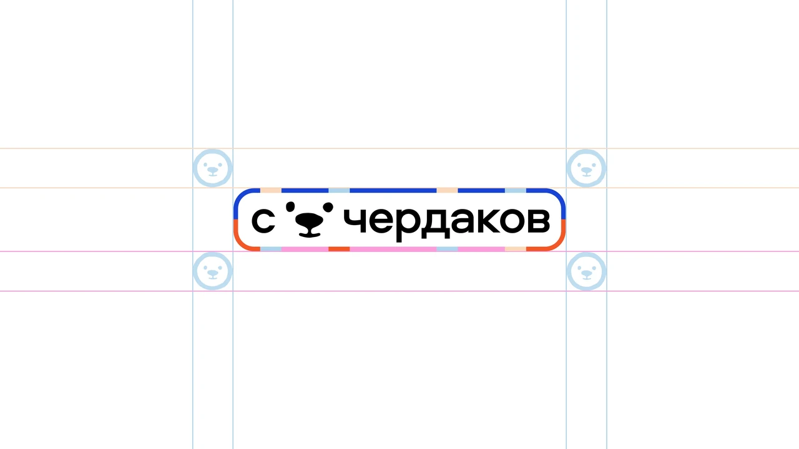
Логотип
Медведь появляется между «с» и «чердаков», становясь частью названия. В брендбуке собраны версии логотипа, охранное поле и ограничения, которые помогают сохранять его узнаваемость на разных носителях.
Цвет и шрифт
В палитре насыщенные синий и оранжевый сочетаются со светлыми голубым, бежевым и розовым. Тёплые оттенки связаны с заботой и домашним теплом. Голубой и синий добавляют ощущение доверия и надёжности.
Для текста выбрано семейство Aeroport. Начертание Bold используется в заголовках, а Regular помогает расположить рядом подробную информацию.
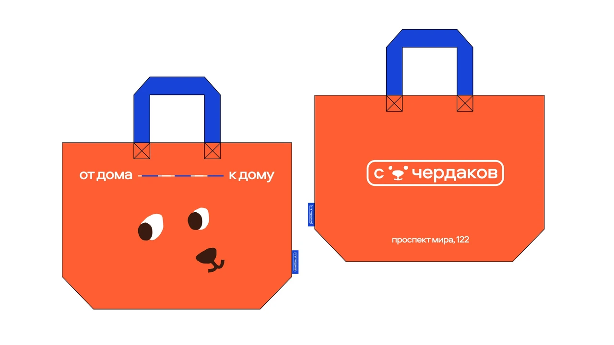
Социальные сети
Для постов и сторис подготовлены шаблоны, в которых можно менять персонажей, предметы и композиции. Общая палитра, шрифт и повторяющаяся графика сохраняют узнаваемость при разных сообщениях.
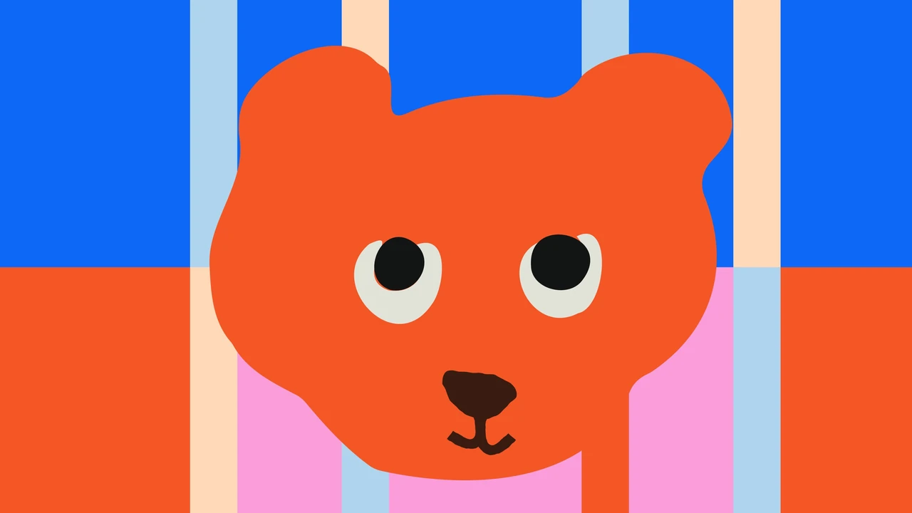
От дома к дому
Цветные полосы и прямоугольники собираются в узор, который используется целиком или сужается до линии. Рядом со слоганом «от дома к дому» она соединяет две части фразы и обозначает путь вещи. Этот приём повторяется на витрине, упаковке и рекламных материалах.
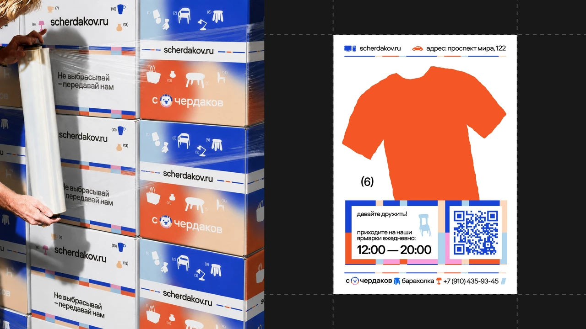
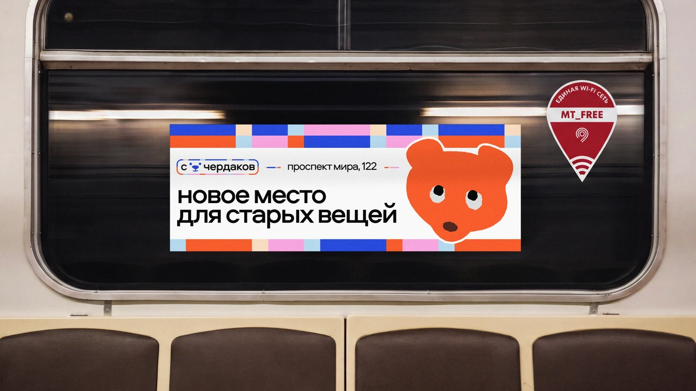
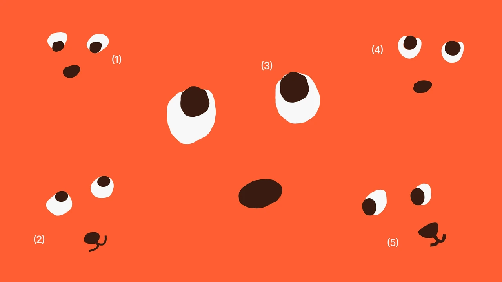
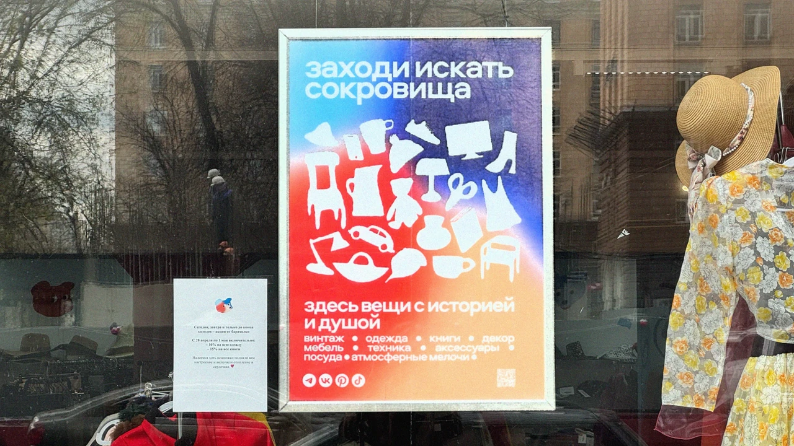
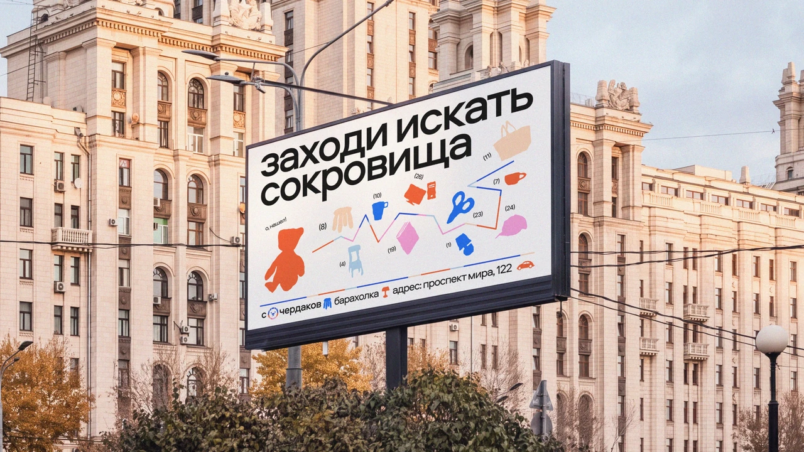
Айдентика из вещей
Посуда, одежда, мебель и другие находки превращаются в простые силуэты. Они рассказывают об ассортименте и дополняют персонажей.
Предметы используются по отдельности или собираются в композиции. Общая палитра связывает их между собой, а текстура поддерживает тему обжитых вещей.
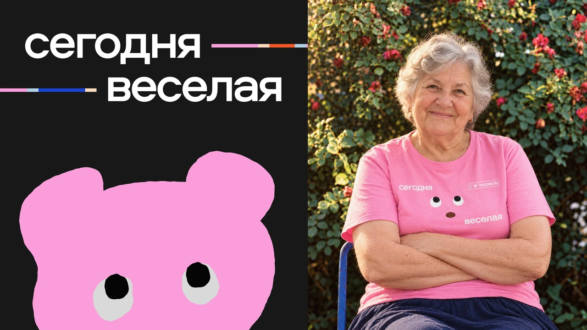
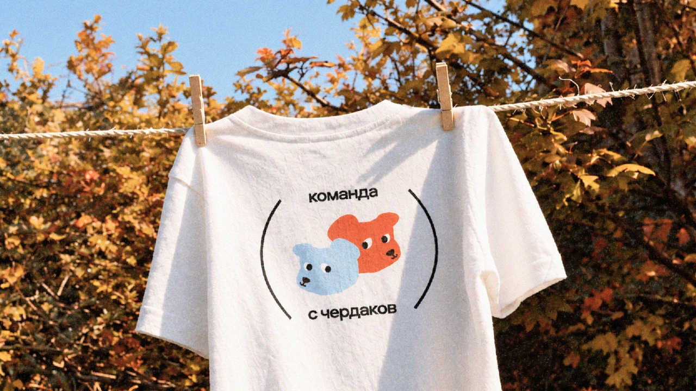
Результат
Для «С Чердаков» разработаны персонажи, предметная графика, паттерн, логотип и шаблоны коммуникации. Их применение показано на упаковке, витрине, транспорте, в наружной рекламе и социальных сетях. Правила собраны в брендбук для дальнейшей работы с айдентикой.
Сегодня «С Чердаков» успешно работает и продолжает развиваться.